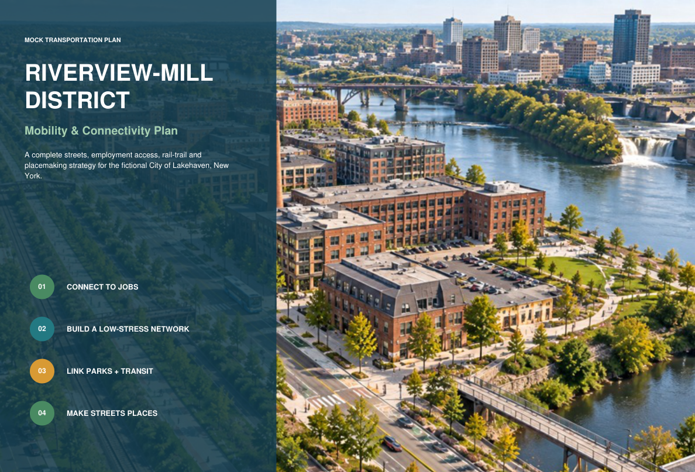
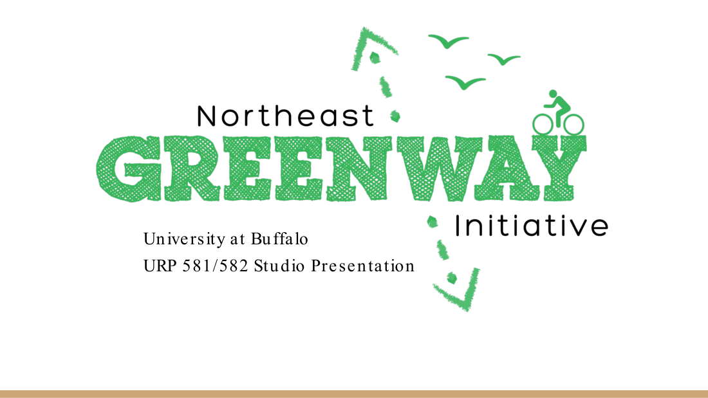
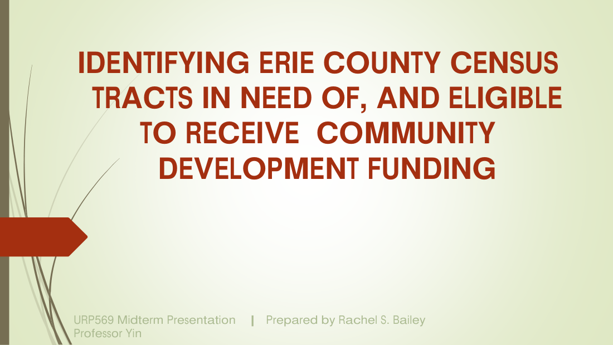
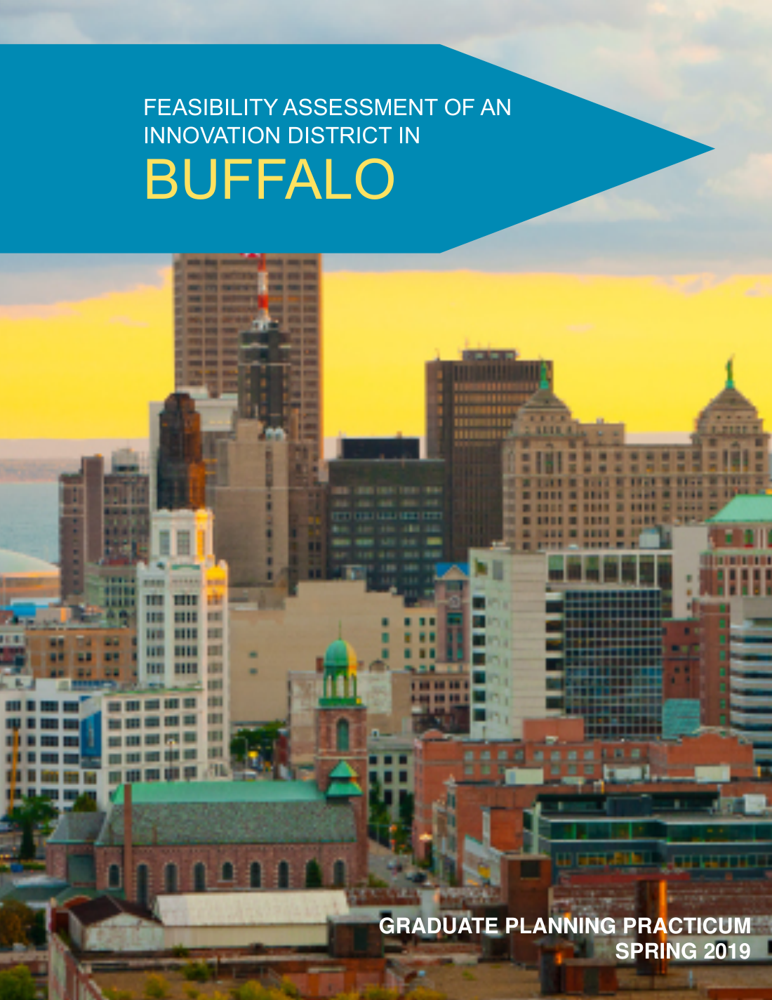
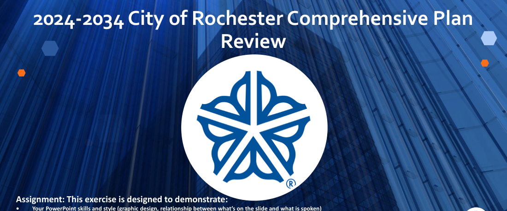
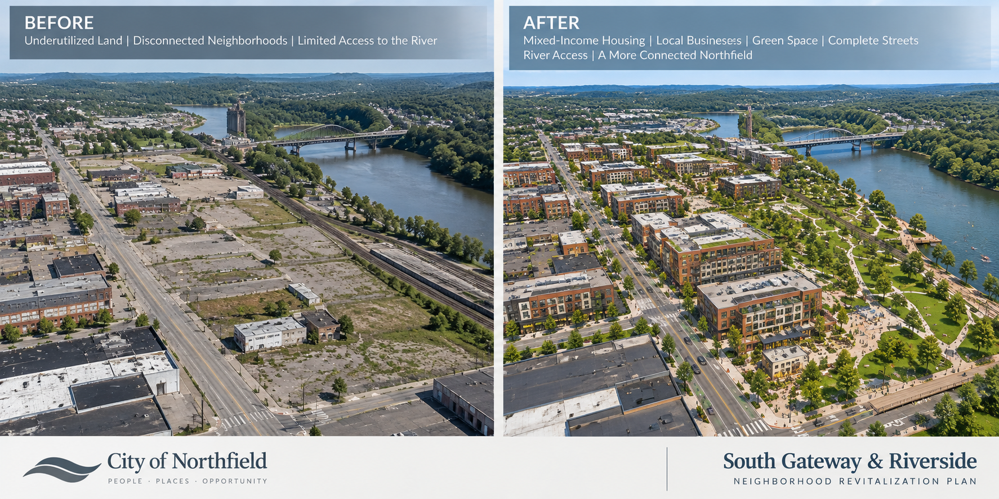

Urban Planning Training,
University at Buffalo
- Land Use
- Environmental Planning and Policy
- Transportation Planning
- Housing and Community Development
“An advanced city is not one where even the poor use cars, but rather one where even the rich use public transport.”— Enrique Peñalosa
My work brings together a Master of Urban Planning, graduate transportation planning training, community and neighborhood planning, research, GIS and data analysis, community engagement, technical writing, and project management. My planning work includes active transportation, bicycle and pedestrian connectivity, multimodal access, transit connections, accessibility, land use, and neighborhood connectivity. This portfolio highlights selected individual and collaborative work demonstrating how I analyze conditions, communicate planning concepts, engage communities, and support projects from concept through implementation.
Selected transportation, community planning, GIS, research and implementation work demonstrating planning analysis, multimodal thinking, technical communication and project coordination.

A fictional transportation planning study integrating complete streets, employment access, rail-trail connectivity, transit, safer crossings, parks and first/last-mile mobility.

Graduate planning studio work examining rail-to-trail conversion, bicycle and pedestrian access, multimodal connections, accessibility, neighborhood connectivity and connections to transit and regional assets.

Selected GIS work demonstrating spatial analysis, mapping, data interpretation and the use of geographic information to communicate planning conditions and patterns.

Evaluation of market conditions, land use, spatial conditions, institutional assets and implementation strategies.

Analysis of key elements, priorities and implementation strategies from the City of Rochester comprehensive plan.

A complete mock municipal planning proposal with existing-conditions analysis, community engagement, strategy, implementation, schedule and team organization.
View a professional writing sample demonstrating research, analysis and clear communication.
View Writing Sample →Transportation Planner, Community Planning application cover letter.
View Cover Letter →Graduate training and portfolio work in complete streets, bicycle and pedestrian connectivity, multi-use trails, transit connections and first/last-mile access.
Land use, neighborhood conditions, community development and implementation-oriented planning concepts.
GIS mapping, Census data, spatial analysis, policy research and translation of findings into practical recommendations.
Resident outreach, public presentations, meeting facilitation and cross-sector coordination with public and community partners.
Planning reports, presentations, RFP/RFQ development, schedules, budgets, consultant coordination and implementation support.